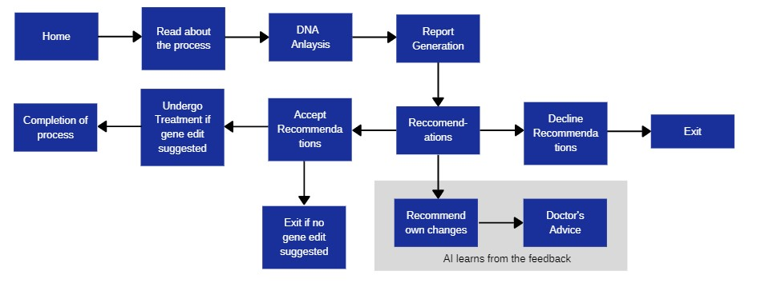
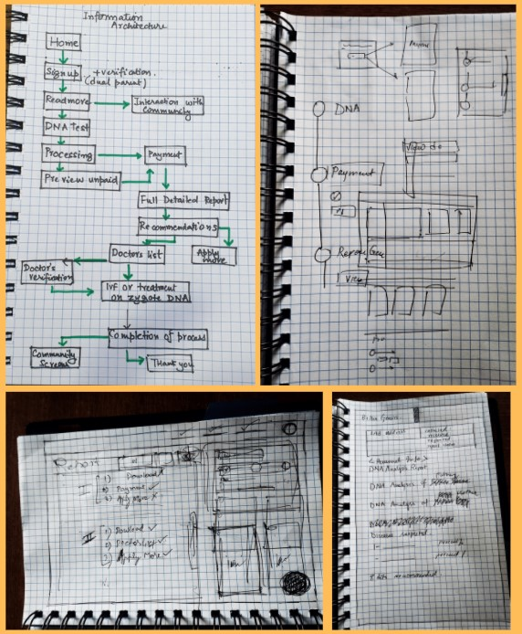
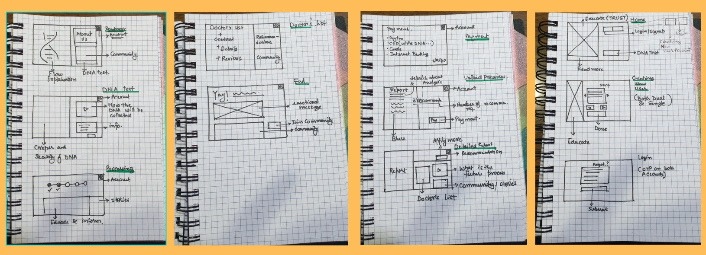
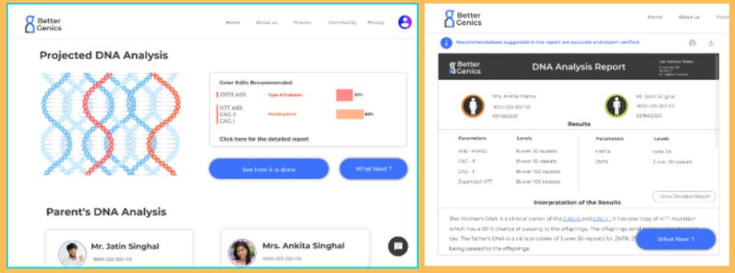
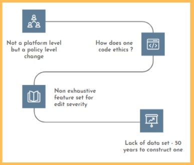

Better genics
A speculative design project that imagines a world where gene manipulation is a publically available service.
Motivation
CRISPR-Cas9 technology allows initial stage gene editing and shows immense potential towards “fixing” hereditary diseases. Putting in simpler terms, this technology holds the ability to pick out the bad DNA strands form the genes that cause a particular disease and replace them with good ones, thereby eradicating the disease from a family’s lineage. BetterGenics was an attempt to provide families with a portal where they can opt for this service while planning pregnancy.
Research and Design Process
We started by talking to potential users - adults aged 25-40 years. Then we made a affinity map to scope problem and decide features that would address our user needs.
We decided the user flow and the information architecture for the website.



Givign Users the Agency
We wanted to give the users not only the option to not accept the change suggested but als the ability to question the system and suggest gene changes that the user wanted in their offspring. We wnated the decition process by the AI algorithms to be as transparent as possible.

Final Prototype
Challenges
Such a project faces a lot of challenges to its implementation. The first being the lack of data. Building a data-set that would cater to BetterGenics, would require at least 50 years. Another issue is that this portal can not be released without a solid policy edifice. There exists a requirement of special analysts, legal personnel, analysts to first of all lay down the ethics of such a system. Next comes, "how to code ethics" - a questions that still puzzles the domain of human centric AI.
